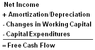

So, you want be a stock analyst? Perhaps not, but since you're reading this we'll assume that you at least want to understand stocks. Whether it's your burning desire to be a hotshot analyst on Wall Street or you just like to be hands-on with your own portfolio, you've come to the right spot.
Fundamental analysis is the cornerstone of investing. In fact, some would say that you aren't really investing if you aren't performing fundamental analysis.Because the subject is so broad, however, it's tough to know where to start. There are an endless number of investment strategies that are very different from each other, yet almost all use the fundamentals.
The goal of this tutorial is to provide a foundation for understanding fundamental analysis. It's geared primarily at new investors who don't know a balance sheet from an income statement.While you may not be a "stock-picker extraordinaire" by the end of this tutorial, you will have a much more solid grasp of the language and concepts behind security analysis and be able to use this to further your knowledge in other areas without feeling totally lost.
The biggest part of fundamental analysis involves delving into the financial statements. Also known as quantitative analysis, this involves looking at revenue, expenses, assets, liabilities and all the other financial aspects of a company. Fundamental analysts look at this information to gain insight on a company's future performance. A good part of this tutorial will be spent learning about the balance sheet, income statement, cash flow statement and how they all fit together.
But there is more than just number crunching when it comes to analyzing a company. This is where qualitative analysis comes in - the breakdown of all the intangible, difficult-to-measure aspects of a company. Finally, we'll wrap up the tutorial with an intro on valuation and point you in the direction of additional tutorials you might be interested in.
(Also, although it's not required, you might find it helpful to read our Investing 101 tutorial, as well as our tutorial on Stock Basics, before starting.)
Ready? Let's dive into things with our first section, What Is It?
In this section we are going to review the basics of fundamental analysis, examine how it can be broken down into quantitative and qualitative factors, introduce the subject of intrinsic value and conclude with some of the downfalls of using this technique.
The Very Basics
When talking about stocks, fundamental analysis is a technique that attempts to determine a security's value by focusing on underlying factors that affect a company's actual business and its future prospects. On a broader scope, you can perform fundamental analysis on industries or the economy as a whole. The term simply refers to the analysis of the economic well-being of a financial entity as opposed to only its price movements.
Fundamental analysis serves to answer questions, such as:
Note: The term fundamental analysis is used most often in the context of stocks, but you can perform fundamental analysis on any security, from a bond to a derivative. As long as you look at the economic fundamentals, you are doing fundamental analysis. For the purpose of this tutorial, fundamental analysis always is referred to in the context of stocks.
Fundamentals: Quantitative and Qualitative
You could define fundamental analysis as "researching the fundamentals", but that doesn't tell you a whole lot unless you know what fundamentals are. As we mentioned in the introduction, the big problem with defining fundamentals is that it can include anything related to the economic well-being of a company. Obvious items include things like revenue and profit, but fundamentals also include everything from a company's market share to the quality of its management.
The various fundamental factors can be grouped into two categories: quantitative and qualitative. The financial meaning of these terms isn't all that different from their regular definitions. Here is how the MSN Encarta dictionary defines the terms:
Turning to qualitative fundamentals, these are the less tangible factors surrounding a business - things such as the quality of a company's board members and key executives, its brand-name recognition, patents or proprietary technology.
Quantitative Meets Qualitative
Neither qualitative nor quantitative analysis is inherently better than the other. Instead, many analysts consider qualitative factors in conjunction with the hard, quantitative factors. Take the Coca-Cola Company, for example. When examining its stock, an analyst might look at the stock's annual dividend payout, earnings per share, P/E ratio and many other quantitative factors. However, no analysis of Coca-Cola would be complete without taking into account its brand recognition. Anybody can start a company that sells sugar and water, but few companies on earth are recognized by billions of people. It's tough to put your finger on exactly what the Coke brand is worth, but you can be sure that it's an essential ingredient contributing to the company's ongoing success.
The Concept of Intrinsic Value
Before we get any further, we have to address the subject of intrinsic value. One of the primary assumptions of fundamental analysis is that the price on the stock market does not fully reflect a stock's "real" value. After all, why would you be doing price analysis if the stock market were always correct? In financial jargon, this true value is known as the intrinsic value.
For example, let's say that a company's stock was trading at $20. After doing extensive homework on the company, you determine that it really is worth $25. In other words, you determine the intrinsic value of the firm to be $25. This is clearly relevant because an investor wants to buy stocks that are trading at prices significantly below their estimated intrinsic value.
This leads us to one of the second major assumptions of fundamental analysis: in the long run, the stock market will reflect the fundamentals. There is no point in buying a stock based on intrinsic value if the price never reflected that value. Nobody knows how long "the long run" really is. It could be days or years.
This is what fundamental analysis is all about. By focusing on a particular business, an investor can estimate the intrinsic value of a firm and thus find opportunities where he or she can buy at a discount. If all goes well, the investment will pay off over time as the market catches up to the fundamentals.
The big unknowns are:
1)You don't know if your estimate of intrinsic value is correct; and
2)You don't know how long it will take for the intrinsic value to be reflected in the marketplace.
Criticisms of Fundamental Analysis
The biggest criticisms of fundamental analysis come primarily from two groups: proponents of technical analysis and believers of the "efficient market hypothesis".
Technical analysis is the other major form of security analysis. We're not going to get into too much detail on the subject. (More information is available in our Introduction to Technical Analysis tutorial.)
Put simply, technical analysts base their investments (or, more precisely, their trades) solely on the price and volume movements of securities. Using charts and a number of other tools, they trade on momentum, not caring about the fundamentals. While it is possible to use both techniques in combination, one of the basic tenets of technical analysis is that the market discounts everything. Accordingly, all news about a company already is priced into a stock, and therefore a stock's price movements give more insight than the underlying fundamental factors of the business itself.
Followers of the efficient market hypothesis, however, are usually in disagreement with both fundamental and technical analysts. The efficient market hypothesis contends that it is essentially impossible to produce market-beating returns in the long run, through either fundamental or technical analysis. The rationale for this argument is that, since the market efficiently prices all stocks on an ongoing basis, any opportunities for excess returns derived from fundamental (or technical) analysis would be almost immediately whittled away by the market's many participants, making it impossible for anyone to meaningfully outperform the market over the long term.
Before diving into a company's financial statements, we're going to take a look at some of the qualitative aspects of a company.
Fundamental analysis seeks to determine the intrinsic value of a company's stock. But since qualitative factors, by definition, represent aspects of a company's business that are difficult or impossible to quantify, incorporating that kind of information into a pricing evaluation can be quite difficult. On the flip side, as we've demonstrated, you can't ignore the less tangible characteristics of a company.
In this section we are going to highlight some of the company-specific qualitative factors that you should be aware of.
Business Model
Even before an investor looks at a company's financial statements or does any research, one of the most important questions that should be asked is: What exactly does the company do? This is referred to as a company's business model – it's how a company makes money. You can get a good overview of a company's business model by checking out its website or reading the first part of its 10-K filing (Note: We'll get into more detail about the 10-K in the financial statements chapter. For now, just bear with us).
Sometimes business models are easy to understand. Take McDonalds, for instance, which sells hamburgers, fries, soft drinks, salads and whatever other new special they are promoting at the time. It's a simple model, easy enough for anybody to understand.
Other times, you'd be surprised how complicated it can get. Boston Chicken Inc. is a prime example of this. Back in the early '90s its stock was the darling of Wall Street. At one point the company's CEO bragged that they were the "first new fast-food restaurant to reach $1 billion in sales since 1969". The problem is, they didn't make money by selling chicken. Rather, they made their money from royalty fees and high-interest loans to franchisees. Boston Chicken was really nothing more than a big franchisor. On top of this, management was aggressive with how it recognized its revenue. As soon as it was revealed that all the franchisees were losing money, the house of cards collapsed and the company went bankrupt.
At the very least, you should understand the business model of any company you invest in. The "Oracle of Omaha", Warren Buffett, rarely invests in tech stocks because most of the time he doesn't understand them. This is not to say the technology sector is bad, but it's not Buffett's area of expertise; he doesn't feel comfortable investing in this area. Similarly, unless you understand a company's business model, you don't know what the drivers are for future growth, and you leave yourself vulnerable to being blindsided like shareholders of Boston Chicken were.
Competitive Advantage
Another business consideration for investors is competitive advantage. A company's long-term success is driven largely by its ability to maintain a competitive advantage - and keep it. Powerful competitive advantages, such as Coca Cola's brand name and Microsoft's domination of the personal computer operating system, create a moat around a business allowing it to keep competitors at bay and enjoy growth and profits. When a company can achieve competitive advantage, its shareholders can be well rewarded for decades.
Professor Porter argues that, in general, sustainable competitive advantage gained by: Harvard
Management
Just as an army needs a general to lead it to victory, a company relies upon management to steer it towards financial success. Some believe that management is the most important aspect for investing in a company. It makes sense - even the best business model is doomed if the leaders of the company fail to properly execute the plan.
So how does an average investor go about evaluating the management of a company?
This is one of the areas in which individuals are truly at a disadvantage compared to professional investors. You can't set up a meeting with management if you want to invest a few thousand dollars. On the other hand, if you are a fund manager interested in investing millions of dollars, there is a good chance you can schedule a face-to-face meeting with the upper brass of the firm.
Every public company has a corporate information section on its website. Usually there will be a quick biography on each executive with their employment history, educational background and any applicable achievements. Don't expect to find anything useful here. Let's be honest: We're looking for dirt, and no company is going to put negative information on its corporate website.
Instead, here are a few ways for you to get a feel for management:
1. Conference Calls
The Chief Executive Officer (CEO) and Chief Financial Officer (CFO) host quarterly conference calls. (Sometimes you'll get other executives as well.) The first portion of the call is management basically reading off the financial results. What is really interesting is the question-and-answer portion of the call. This is when the line is open for analysts to call in and ask management direct questions. Answers here can be revealing about the company, but more importantly, listen for candor. Do they avoid questions, like politicians, or do they provide forthright answers?
2. Management Discussion and Analysis (MD&A)
The Management Discussion and Analysis is found at the beginning of the annual report (discussed in more detail later in this tutorial). In theory, the MD&A is supposed to be frank commentary on the management's outlook. Sometimes the content is worthwhile, other times it's boilerplate. One tip is to compare what management said in past years with what they are saying now. Is it the same material rehashed? Have strategies actually been implemented? If possible, sit down and read the last five years of MD&As; it can be illuminating.
3. Ownership and Insider Sales
Just about any large company will compensate executives with a combination of cash, restricted stock and options. While there are problems with stock options (See Putting Management Under the Microscope), it is a positive sign that members of management are also shareholders. The ideal situation is when the founder of the company is still in charge. Examples include Bill Gates (in the '80s and '90s), Michael Dell and Warren Buffett. When you know that a majority of management's wealth is in the stock, you can have confidence that they will do the right thing. As well, it's worth checking out if management has been selling its stock. This has to be filed with the Securities and Exchange Commission (SEC), so it's publicly available information. Talk is cheap - think twice if you see management unloading all of its shares while saying something else in the media.
4. Past Performance
Another good way to get a feel for management capability is to check and see how executives have done at other companies in the past. You can normally find biographies of top executives on company web sites. Identify the companies they worked at in the past and do a search on those companies and their performance.
Corporate Governance
Corporate governance describes the policies in place within an organization denoting the relationships and responsibilities between management, directors and stakeholders. These policies are defined and determined in the company charter and its bylaws, along with corporate laws and regulations. The purpose of corporate governance policies is to ensure that proper checks and balances are in place, making it more difficult for anyone to conduct unethical and illegal activities.
Good corporate governance is a situation in which a company complies with all of its governance policies and applicable government regulations (such as the Sarbanes-Oxley Act of 2002) in order to look out for the interests of the company's investors and other stakeholders.
Although, there are companies and organizations (such as Standard & Poor's) that attempt to quantitatively assess companies on how well their corporate governance policies serve stakeholders, most of these reports are quite expensive for the average investor to purchase.
Fortunately, corporate governance policies typically cover a few general areas: structure of the board of directors, stakeholder rights and financial and information transparency. With a little research and the right questions in mind, investors can get a good idea about a company's corporate governance.
Financial and Information Transparency
This aspect of governance relates to the quality and timeliness of a company's financial disclosures and operational happenings. Sufficient transparency implies that a company's financial releases are written in a manner that stakeholders can follow what management is doing and therefore have a clear understanding of the company's current financial situation.
Stakeholder Rights
This aspect of corporate governance examines the extent that a company's policies are benefiting stakeholder interests, notably shareholder interests. Ultimately, as owners of the company, shareholders should have some access to the board of directors if they have concerns or want something addressed. Therefore companies with good governance give shareholders a certain amount of ownership voting rights to call meetings to discuss pressing issues with the board.
Another relevant area for good governance, in terms of ownership rights, is whether or not a company possesses large amounts of takeover defenses (such as the Macaroni Defense or the Poison Pill) or other measures that make it difficult for changes in management, directors and ownership to occur. (To read more on takeover strategies, see The Wacky World of M&As.)
Structure of the Board of Directors
The board of directors is composed of representatives from the company and representatives from outside of the company. The combination of inside and outside directors attempts to provide an independent assessment of management's performance, making sure that the interests of shareholders are represented.
The key word when looking at the board of directors is independence. The board of directors is responsible for protecting shareholder interests and ensuring that the upper management of the company is doing the same. The board possesses the right to hire and fire members of the board on behalf of the shareholders. A board filled with insiders will often not serve as objective critics of management and will defend their actions as good and beneficial, regardless of the circumstances.
Information on the board of directors of a publicly traded company (such as biographies of individual board members and compensation-related info) can be found in the DEF 14A proxy statement.
We've now gone over the business model, management and corporate governance. These three areas are all important to consider when analyzing any company. We will now move on to looking at qualitative factors in the environment in which the company operates.
Each industry has differences in terms of its customer base, market share among firms, industry-wide growth, competition, regulation and business cycles. Learning about how the industry works will give an investor a deeper understanding of a company's financial health.
Customers
Some companies serve only a handful of customers, while others serve millions. In general, it's a red flag (a negative) if a business relies on a small number of customers for a large portion of its sales because the loss of each customer could dramatically affect revenues. For example, think of a military supplier who has 100% of its sales with the
Market Share
Understanding a company's present market share can tell volumes about the company's business. The fact that a company possesses an 85% market share tells you that it is the largest player in its market by far. Furthermore, this could also suggest that the company possesses some sort of "economic moat," in other words, a competitive barrier serving to protect its current and future earnings, along with its market share. Market share is important because of economies of scale. When the firm is bigger than the rest of its rivals, it is in a better position to absorb the high fixed costs of a capital-intensive industry.
Industry Growth
One way of examining a company's growth potential is to first examine whether the amount of customers in the overall market will grow. This is crucial because without new customers, a company has to steal market share in order to grow.
In some markets, there is zero or negative growth, a factor demanding careful consideration. For example, a manufacturing company dedicated solely to creating audio compact cassettes might have been very successful in the '70s, '80s and early '90s. However, that same company would probably have a rough time now due to the advent of newer technologies, such as CDs and MP3s. The current market for audio compact cassettes is only a fraction of what it was during the peak of its popularity.
Competition
Simply looking at the number of competitors goes a long way in understanding the competitive landscape for a company. Industries that have limited barriers to entry and a large number of competing firms create a difficult operating environment for firms.
One of the biggest risks within a highly competitive industry is pricing power. This refers to the ability of a supplier to increase prices and pass those costs on to customers. Companies operating in industries with few alternatives have the ability to pass on costs to their customers. A great example of this is Wal-Mart. They are so dominant in the retailing business, that Wal-Mart practically sets the price for any of the suppliers wanting to do business with them. If you want to sell to Wal-Mart, you have little, if any, pricing power.
Regulation
Certain industries are heavily regulated due to the importance or severity of the industry's products and/or services. As important as some of these regulations are to the public, they can drastically affect the attractiveness of a company for investment purposes.
In industries where one or two companies represent the entire industry for a region (such as utility companies), governments usually specify how much profit each company can make. In these instances, while there is the potential for sizable profits, they are limited due to regulation.
In other industries, regulation can play a less direct role in affecting industry pricing. For example, the drug industry is one of most regulated industries. And for good reason - no one wants an ineffective drug that causes deaths to reach the market. As a result, the
All in all, investors should always be on the lookout for regulations that could potentially have a material impact upon a business' bottom line. Investors should keep these regulatory costs in mind as they assess the potential risks and rewards of investing.
The massive amount of numbers in a company's financial statements can be bewildering and intimidating to many investors. On the other hand, if you know how to analyze them, the financial statements are a gold mine of information.
Financial statements are the medium by which a company discloses information concerning its financial performance. Followers of fundamental analysis use the quantitative information gleaned from financial statements to make investment decisions. Before we jump into the specifics of the three most important financial statements - income statements, balance sheets and cash flow statements - we will briefly introduce each financial statement's specific function, along with where they can be found.
The Major Statements
The Balance Sheet
The balance sheet represents a record of a company's assets, liabilities and equity at a particular point in time. The balance sheet is named by the fact that a business's financial structure balances in the following manner:
| Assets = Liabilities + Shareholders\' Equity |
Assets represent the resources that the business owns or controls at a given point in time. This includes items such as cash, inventory, machinery and buildings. The other side of the equation represents the total value of the financing the company has used to acquire those assets. Financing comes as a result of liabilities or equity. Liabilities represent debt (which of course must be paid back), while equity represents the total value of money that the owners have contributed to the business - including retained earnings, which is the profit made in previous years.
The Income Statement
While the balance sheet takes a snapshot approach in examining a business, the income statement measures a company's performance over a specific time frame. Technically, you could have a balance sheet for a month or even a day, but you'll only see public companies report quarterly and annually.
The income statement presents information about revenues, expenses and profit that was generated as a result of the business' operations for that period.
Statement of Cash Flows
The statement of cash flows represents a record of a business' cash inflows and outflows over a period of time. Typically, a statement of cash flows focuses on the following cash-related activities:
10-K and 10-Q
Now that you have an understanding of what the three financial statements represent, let's discuss where an investor can go about finding them. In the
Some other pieces of information that are also required are an auditor's report, management discussion and analysis (MD&A) and a relatively detailed description of the company's operations and prospects for the upcoming year.
All of this information can be found in the business' annual 10-K and quarterly 10-Q filings, which are released by the company's management and can be found on the internet or in physical form. (For more information, see Where can I find a company's annual report and its SEC filings?)
The 10-K is an annual filing that discloses a business's performance over the course of the fiscal year. In addition to finding a business's financial statements for the most recent year, investors also have access to the business's historical financial measures, along with information detailing the operations of the business. This includes a lot of information, such as the number of employees, biographies of upper management, risks, future plans for growth, etc.
Businesses also release an annual report, which some people also refer to as the 10-K. The annual report is essentially the 10-K released in a fancier marketing format. It will include much of the same information, but not all, that you can find in the 10-K. The 10-K really is boring - it's just pages and pages of numbers, text and legalese. But just because it's boring doesn't mean it isn't useful. There is a lot of good information in a 10-K, and it's required reading for any serious investor.
You can think of the 10-Q filing as a smaller version of a 10-K. It reports the company's performance after each fiscal quarter. Each year three 10-Q filings are released - one for each of the first three quarters. (Note: There is no 10-Q for the fourth quarter, because the 10-K filing is released during that time). Unlike the 10-K filing, 10-Q filings are not required to be audited. Here's a tip if you have trouble remembering which is which: think "Q" for quarter.
The financial statements are not the only parts found in a business's annual and quarterly SEC filings. Here are some other noteworthy sections:
Management Discussion and Analysis (MD&A)
As a preface to the financial statements, a company's management will typically spend a few pages talking about the recent year (or quarter) and provide background on the company. This is referred to as the management discussion and analysis (MD&A). In addition to providing investors a clearer picture of what the company does, the MD&A also points out some key areas in which the company has performed well.
Don't expect the letter from management to delve into all the juicy details affecting the company's performance. The management's analysis is at their discretion, so understand they probably aren't going to be disclosing any negatives.
Here are some things to look out for:
The Auditor's Report
The auditors' job is to express an opinion on whether the financial statements are reasonably accurate and provide adequate disclosure. This is the purpose behind the auditor's report, which is sometimes called the "report of independent accountants".
By law, every public company that trades stocks or bonds on an exchange must have its annual reports audited by a certified public accountants firm. An auditor's report is meant to scrutinize the company and identify anything that might undermine the integrity of the financial statements.
The typical auditor's report is almost always broken into three paragraphs and written in the following fashion:
| Independent Auditor\'s Report
Paragraph 1 Recounts the responsibilities of the auditor and directors in general and lists the areas of the financial statements that were audited. Paragraph 2 Lists how the generally accepted accounting principles (GAAP) were applied, and what areas of the company were assessed. Paragraph 3 Provides the auditor\'s opinion on the financial statements of the company being audited. This is simply an opinion, not a guarantee of accuracy. |
While the auditor's report won't uncover any financial bombshells, audits give credibility to the figures reported by management. You'll only see unaudited financials for unlisted firms (those that trade OTCBB or on the Pink Sheets). While quarterly statements aren't audited, you should be very wary of any annual financials that haven't been given the accountants' stamp of approval.
The Notes to the Financial Statements
Just as the MD&A serves an introduction to the financial statements, the notes to the financial statements (sometimes called footnotes) tie up any loose ends and complete the overall picture. If the income statement, balance sheet and statement of cash flows are the heart of the financial statements, then the footnotes are the arteries that keep everything connected. Therefore, if you aren't reading the footnotes, you're missing out on a lot of information.
The footnotes list important information that could not be included in the actual ledgers. For example, they list relevant things like outstanding leases, the maturity dates of outstanding debt and details on compensation plans, such as stock options, etc.
Generally speaking there are two types of footnotes:
Accounting Methods - This type of footnote identifies and explains the major accounting policies of the business that the company feels that you should be aware of. This is especially important if a company has changed accounting policies. It may be that a firm is practicing "cookie jar accounting" and is changing policies only to take advantage of current conditions in order to hide poor performance.
Disclosure - The second type of footnote provides additional disclosure that simply could not be put in the financial statements. The financial statements in an annual report are supposed to be clean and easy to follow. To maintain this cleanliness, other calculations are left for the footnotes. For example, details of long-term debt - such as maturity dates and the interest rates at which debt was issued - can give you a better idea of how borrowing costs are laid out. Other areas of disclosure include everything from pension plan liabilities for existing employees to details about ominous legal proceedings involving the company.
The majority of investors and analysts read the balance sheet, income statement and cash flow statement but, for whatever reason, the footnotes are often ignored. What sets informed investors apart is digging deeper and looking for information that others typically wouldn't. No matter how boring it might be, read the fine print - it will make you a better investor.
The income statement is basically the first financial statement you will come across in an annual report or quarterly Securities And Exchange Commission (SEC) filing.
It also contains the numbers most often discussed when a company announces its results - numbers such as revenue, earnings and earnings per share. Basically, the income statement shows how much money the company generated (revenue), how much it spent (expenses) and the difference between the two (profit) over a certain time period.
When it comes to analyzing fundamentals, the income statement lets investors know how well the company's business is performing - or, basically, whether or not the company is making money. Generally speaking, companies ought to be able to bring in more money than they spend or they don't stay in business for long. Those companies with low expenses relative to revenue - or high profits relative to revenue - signal strong fundamentals to investors.
Revenue as an investor signal
Revenue, also commonly known as sales, is generally the most straightforward part of the income statement. Often, there is just a single number that represents all the money a company brought in during a specific time period, although big companies sometimes break down revenue by business segment or geography.
The best way for a company to improve profitability is by increasing sales revenue. For instance, Starbucks Coffee has aggressive long-term sales growth goals that include a distribution system of 20,000 stores worldwide. Consistent sales growth has been a strong driver of Starbucks' profitability.
The best revenue are those that continue year in and year out. Temporary increases, such as those that might result from a short-term promotion, are less valuable and should garner a lower price-to-earnings multiple for a company.
What are the Expenses?
There are many kinds of expenses, but the two most common are the cost of goods sold (COGS) and selling, general and administrative expenses (SG&A). Cost of goods sold is the expense most directly involved in creating revenue. It represents the costs of producing or purchasing the goods or services sold by the company. For example, if Wal-Mart pays a supplier $4 for a box of soap, which it sells to customers for $5. When it is sold, Wal-Mart's cost of good sold for the box of soap would be $4.
Next, costs involved in operating the business are SG&A. This category includes marketing, salaries, utility bills, technology expenses and other general costs associated with running a business. SG&A also includes depreciation and amortization. Companies must include the cost of replacing worn out assets. Remember, some corporate expenses, such as research and development (R&D) at technology companies, are crucial to future growth and should not be cut, even though doing so may make for a better-looking earnings report. Finally, there are financial costs, notably taxes and interest payments, which need to be considered.
Profits = Revenue - Expenses
Profit, most simply put, is equal to total revenue minus total expenses. However, there are several commonly used profit subcategories that tell investors how the company is performing. Gross profit is calculated as revenue minus cost of sales. Returning to Wal-Mart again, the gross profit from the sale of the soap would have been $1 ($5 sales price less $4 cost of goods sold = $1 gross profit).
Companies with high gross margins will have a lot of money left over to spend on other business operations, such as R&D or marketing. So be on the lookout for downward trends in the gross margin rate over time. This is a telltale sign of future problems facing the bottom line. When cost of goods sold rises rapidly, they are likely to lower gross profit margins - unless, of course, the company can pass these costs onto customers in the form of higher prices.
Operating profit is equal to revenues minus the cost of sales and SG&A. This number represents the profit a company made from its actual operations, and excludes certain expenses and revenues that may not be related to its central operations. High operating margins can mean the company has effective control of costs, or that sales are increasing faster than operating costs. Operating profit also gives investors an opportunity to do profit-margin comparisons between companies that do not issue a separate disclosure of their cost of goods sold figures (which are needed to do gross margin analysis). Operating profit measures how much cash the business throws off, and some consider it a more reliable measure of profitability since it is harder to manipulate with accounting tricks than net earnings.
Net income generally represents the company's profit after all expenses, including financial expenses, have been paid. This number is often called the "bottom line" and is generally the figure people refer to when they use the word "profit" or "earnings".
When a company has a high profit margin, it usually means that it also has one or more advantages over its competition. Companies with high net profit margins have a bigger cushion to protect themselves during the hard times. Companies with low profit margins can get wiped out in a downturn. And companies with profit margins reflecting a competitive advantage are able to improve their market share during the hard times - leaving them even better positioned when things improve again.
Conclusion
You can gain valuable insights about a company by examining its income statement. Increasing sales offers the first sign of strong fundamentals. Rising margins indicate increasing efficiency and profitability. It's also a good idea to determine whether the company is performing in line with industry peers and competitors. Look for significant changes in revenues, costs of goods sold and SG&A to get a sense of the company's profit fundamentals.
To learn more about reading financial statements, see Understanding The Income Statement or Advanced Financial Statement Analysis.
Investors often overlook the balance sheet. Assets and liabilities aren't nearly as sexy as revenue and earnings. While earnings are important, they don't tell the whole story.
The balance sheet highlights the financial condition of a company and is an integral part of the financial statements. (To read more on financial statement basics, see What You Need To Know About Financial Statements and Advanced Financial Statement Analysis.)
The Snapshot of Health
The balance sheet, also known as the statement of financial condition, offers a snapshot of a company's health. It tells you how much a company owns (its assets), and how much it owes (its liabilities). The difference between what it owns and what it owes is its equity, also commonly called "net assets" or "shareholders equity".
The balance sheet tells investors a lot about a company's fundamentals: how much debt the company has, how much it needs to collect from customers (and how fast it does so), how much cash and equivalents it possesses and what kinds of funds the company has generated over time.
To learn more, check out our balance sheet video:
The Balance Sheet's Main Three
Assets, liability and equity are the three main components of the balance sheet. Carefully analyzed, they can tell investors a lot about a company's fundamentals.
Assets
There are two main types of assets: current assets and non-current assets. Current assets are likely to be used up or converted into cash within one business cycle - usually treated as twelve months. Three very important current asset items found on the balance sheet are: cash, inventories and accounts receivables.
Investors normally are attracted to companies with plenty of cash on their balance sheets. After all, cash offers protection against tough times, and it also gives companies more options for future growth. Growing cash reserves often signal strong company performance. Indeed, it shows that cash is accumulating so quickly that management doesn't have time to figure out how to make use of it. A dwindling cash pile could be a sign of trouble. That said, if loads of cash are more or less a permanent feature of the company's balance sheet, investors need to ask why the money is not being put to use. Cash could be there because management has run out of investment opportunities or is too short-sighted to know what to do with the money.
Inventories are finished products that haven't yet sold. As an investor, you want to know if a company has too much money tied up in its inventory. Companies have limited funds available to invest in inventory. To generate the cash to pay bills and return a profit, they must sell the merchandise they have purchased from suppliers. Inventory turnover (cost of goods sold divided by average inventory) measures how quickly the company is moving merchandise through the warehouse to customers. If inventory grows faster than sales, it is almost always a sign of deteriorating fundamentals.
Receivables are outstanding (uncollected bills). Analyzing the speed at which a company collects what it's owed can tell you a lot about its financial efficiency. If a company's collection period is growing longer, it could mean problems ahead. The company may be letting customers stretch their credit in order to recognize greater top-line sales and that can spell trouble later on, especially if customers face a cash crunch. Getting money right away is preferable to waiting for it - since some of what is owed may never get paid. The quicker a company gets its customers to make payments, the sooner it has cash to pay for salaries, merchandise, equipment, loans, and best of all, dividends and growth opportunities.
Non-current assets are defined as anything not classified as a current asset. This includes items that are fixed assets, such as property, plant and equipment (PP&E). Unless the company is in financial distress and is liquidating assets, investors need not pay too much attention to fixed assets. Since companies are often unable to sell their fixed assets within any reasonable amount of time they are carried on the balance sheet at cost regardless of their actual value. As a result, it's is possible for companies to grossly inflate this number, leaving investors with questionable and hard-to-compare asset figures.
Liabilities
There are current liabilities and non-current liabilities. Current liabilities are obligations the firm must pay within a year, such as payments owing to suppliers. Non-current liabilities, meanwhile, represent what the company owes in a year or more time. Typically, non-current liabilities represent bank and bondholder debt.
You usually want to see a manageable amount of debt. When debt levels are falling, that's a good sign. Generally speaking, if a company has more assets than liabilities, then it is in decent condition. By contrast, a company with a large amount of liabilities relative to assets ought to be examined with more diligence. Having too much debt relative to cash flows required to pay for interest and debt repayments is one way a company can go bankrupt.
Look at the quick ratio. Subtract inventory from current assets and then divide by current liabilities. If the ratio is 1 or higher, it says that the company has enough cash and liquid assets to cover its short-term debt obligations.
| Quick Ratio = | Current Assets - Inventories Current Liabilities |
Equity
Equity represents what shareholders own, so it is often called shareholder's equity. As described above, equity is equal to total assets minus total liabilities.
| Equity = Total Assets – Total Liabilities |
The two important equity items are paid-in capital and retained earnings. Paid-in capital is the amount of money shareholders paid for their shares when the stock was first offered to the public. It basically represents how much money the firm received when it sold its shares. In other words, retained earnings are a tally of the money the company has chosen to reinvest in the business rather than pay to shareholders. Investors should look closely at how a company puts retained capital to use and how a company generates a return on it.
Most of the information about debt can be found on the balance sheet - but some assets and debt obligations are not disclosed there. For starters, companies often possess hard-to-measure intangible assets. Corporate intellectual property (items such as patents, trademarks, copyrights and business methodologies), goodwill and brand recognition are all common assets in today's marketplace. But they are not listed on company's balance sheets.
There is also off-balance sheet debt to be aware of. This is form of financing in which large capital expenditures are kept off of a company's balance sheet through various classification methods. Companies will often use off-balance-sheet financing to keep the debt levels low. (To continue reading about the balance sheet, see Reading The Balance Sheet, Testing Balance Sheet Strength andBreaking Down The Balance Sheet.)
The cash flow statement shows how much cash comes in and goes out of the company over the quarter or the year. At first glance, that sounds a lot like the income statement in that it records financial performance over a specified period. But there is a big difference between the two.
What distinguishes the two is accrual accounting, which is found on the income statement. Accrual accounting requires companies to record revenues and expenses when transactions occur, not when cash is exchanged. At the same time, the income statement, on the other hand, often includes non-cash revenues or expenses, which the statement of cash flows does not include.
Just because the income statement shows net income of $10 does not means that cash on the balance sheet will increase by $10. Whereas when the bottom of the cash flow statement reads $10 net cash inflow, that's exactly what it means. The company has $10 more in cash than at the end of the last financial period. You may want to think of net cash from operations as the company's "true" cash profit.
Because it shows how much actual cash a company has generated, the statement of cash flows is critical to understanding a company's fundamentals. It shows how the company is able to pay for its operations and future growth.
Indeed, one of the most important features you should look for in a potential investment is the company's ability to produce cash. Just because a company shows a profit on the income statement doesn't mean it cannot get into trouble later because of insufficient cash flows. A close examination of the cash flow statement can give investors a better sense of how the company will fare.
Three Sections of the Cash Flow Statement
Companies produce and consume cash in different ways, so the cash flow statement is divided into three sections: cash flows from operations, financing and investing. Basically, the sections on operations and financing show how the company gets its cash, while the investing section shows how the company spends its cash. (To continue learning about cash flow, see The Essentials Of Cash Flow, Operating Cash Flow: Better Than Net Income? and What Is A Cash Flow Statement?)
Cash Flows from Operating Activities
This section shows how much cash comes from sales of the company's goods and services, less the amount of cash needed to make and sell those goods and services. Investors tend to prefer companies that produce a net positive cash flow from operating activities. High growth companies, such as technology firms, tend to show negative cash flow from operations in their formative years. At the same time, changes in cash flow from operations typically offer a preview of changes in net future income. Normally it's a good sign when it goes up. Watch out for a widening gap between a company's reported earnings and its cash flow from operating activities. If net income is much higher than cash flow, the company may be speeding or slowing its booking of income or costs.
Cash Flows from Investing Activities
This section largely reflects the amount of cash the company has spent on capital expenditures, such as new equipment or anything else that needed to keep the business going. It also includes acquisitions of other businesses and monetary investments such as money market funds.
You want to see a company re-invest capital in its business by at least the rate of depreciation expenses each year. If it doesn't re-invest, it might show artificially high cash inflows in the current year which may not be sustainable.
Cash Flow From Financing Activities
This section describes the goings-on of cash associated with outside financing activities. Typical sources of cash inflow would be cash raised by selling stock and bonds or by bank borrowings. Likewise, paying back a bank loan would show up as a use of cash flow, as would dividend payments and common stock repurchases.
Cash Flow Statement Considerations:
Savvy investors are attracted to companies that produce plenty of free cash flow (FCF). Free cash flow signals a company's ability to pay debt, pay dividends, buy back stock and facilitate the growth of business. Free cash flow, which is essentially the excess cash produced by the company, can be returned to shareholders or invested in new growth opportunities without hurting the existing operations. The most common method of calculating free cash flow is:
|  |
Ideally, investors would like to see that the company can pay for the investing figure out of operations without having to rely on outside financing to do so. A company's ability to pay for its own operations and growth signals to investors that it has very strong fundamentals.
To see more topics on companies and cash flow, read How Some Companies Abuse Cash Flow and Free Cash Flow: Free, But Not Always Easy.
While the concept behind discounted cash flow analysis is simple, its practical application can be a different matter. The premise of the discounted cash flow method is that the current value of a company is simply the present value of its future cash flows that are attributable to shareholders. Its calculation is as follows:
For simplicity's sake, if we know that a company will generate $1 per share in cash flow for shareholders every year into the future; we can calculate what this type of cash flow is worth today. This value is then compared to the current value of the company to determine whether the company is a good investment, based on it being undervalued or overvalued.
There are several different techniques within the discounted cash flow realm of valuation, essentially differing on what type of cash flow is used in the analysis. The dividend discount model focuses on the dividends the company pays to shareholders, while the cash flow model looks at the cash that can be paid to shareholders after all expenses, reinvestments and debt repayments have been made. But conceptually they are the same, as it is the present value of these streams that are taken into consideration.
As we mentioned before, the difficulty lies in the implementation of the model as there are a considerable amount of estimates and assumptions that go into the model. As you can imagine, forecasting the revenue and expenses for a firm five or 10 years into the future can be considerably difficult. Nevertheless, DCF is a valuable tool used by both analysts and everyday investors to estimate a company's value.
For more information and in-depth instructions, see the Discounted Cash Flow Analysis tutorial.
Ratio Valuation
Financial ratios are mathematical calculations using figures mainly from the financial statements, and they are used to gain an idea of a company's valuation and financial performance. Some of the most well-known valuation ratios are price-to-earnings and price-to-book. Each valuation ratio uses different measures in its calculations. For example, price-to-book compares the price per share to the company's book value.
The calculations produced by the valuation ratios are used to gain some understanding of the company's value. The ratios are compared on an absolute basis, in which there are threshold values. For example, in price-to-book, companies trading below '1' are considered undervalued. Valuation ratios are also compared to the historical values of the ratio for the company, along with comparisons to competitors and the overall market itself.
Whenever you're thinking of investing in a company it is vital that you understand what it does, its market and the industry in which it operates. You should never blindly invest in a company.
One of the most important areas for any investor to look at when researching a company is the financial statements. It is essential to understand the purpose of each part of these statements and how to interpret them.
Let's recap what we've learned:
{kind=link}
{kind=link}
{kind=link}